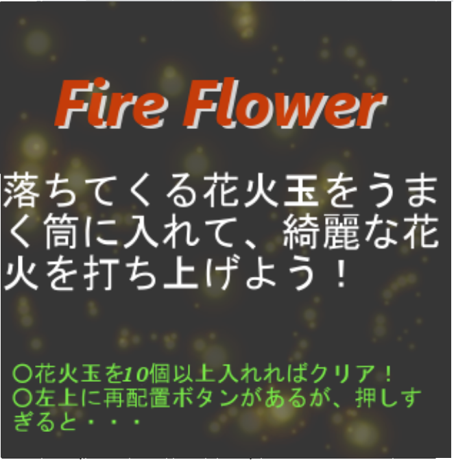
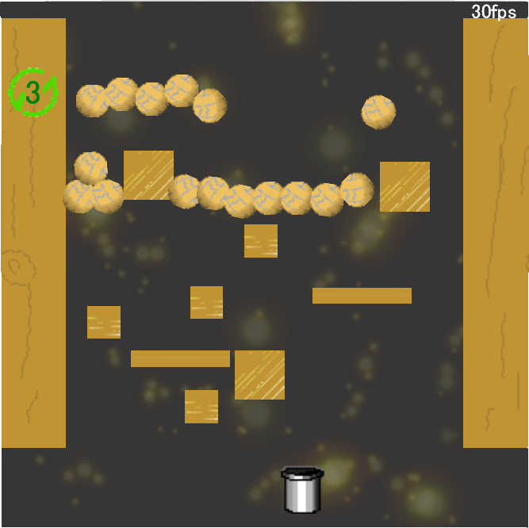

Gallery
このページでは、私がこれまでに制作した作品を紹介します。FireFlowor
【完成日2012.06.02 制作期間18日】
QRコード（スマホプレイ用）
サンプルイメージ
 
作品説明
画面をタッチすることで上から落ちてくる花火玉を、筒を操作して拾っていくゲームです。
合計で１０個以上拾うと、打ち上げシーンになり、
タイミングよくタッチすることで大きな花火を咲かせることができます。
何を工夫したか
このゲームは、ステージがランダムで配置されるので、左の上のボタンで３回まで再配置できるようにしました。
さらにシーンを切り替え、打ち上げ用のシーンを作ることで、より内容をタイトルに近づけました。
どこを見て欲しいか
一番見て欲しいのは打ち上げシーンの花火です。
このゲームは、内容が簡単ですぐに打ち上げシーンにいけると思います。
そこで気持よく打ち上げて欲しいです。
次にステージです。
再配置もそうなのですが、物体同士が重ならないようにするのに苦労しました。
| 開発環境 | JavaScript + HTML5 |
|---|---|
| 使用ツール | enchant.js, Box2D |